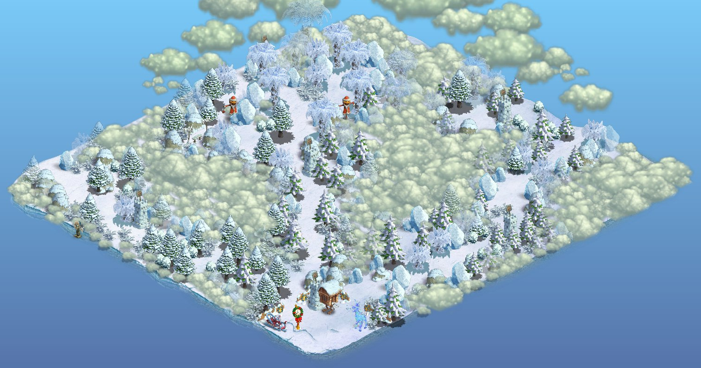

Получено: файл; исходный URL. Дата 23.12.2015 и новогоднее событие совпадают; автор и дата создания снимка неизвестны. Страница ссылается на файл zombicity.info по тому же пути; скачана копия moy.su, побайтовая идентичность не проверена. Страница: источник.

Опушка — событие «Время чудес»
браузерная социальная версия ВКонтакте, новость 23.12.2015- Тип
- Острова
- Версия и дата
- браузерная социальная версия ВКонтакте, новость 23.12.2015
Данные по источнику · браузерная социальная версия ВКонтакте, новость 23.12.2015 · дата редакции не установлена
Предварительно: Историческая фанатская страница. Текст перенесён с сохранением опечаток; если награда показана только неподписанной пиктограммой, приведён путь файла без расшифровки.. Требуется сверка.
- Историческое событие
- В публикации от 23.12.2015 говорится о двух неделях на цепочку квестов и зачистку Опушки. Точка начала отсчёта не уточнена.
- Награда
- Чудо-ель можно было превращать в подарки с 1 января 2016 года. Список и условия отдельных квестов не приведены.
- Сеть
- Страница ссылается на приложение ВКонтакте; самостоятельная проверка оригинальной публикации не проведена.
Связанные сущности
нет проверенных связей — требуется сверка.